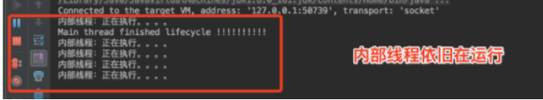

1.线程
线程:程序执行流的最小单元【可以理解为：进程中独立运行的子任务】。
多线程优点:最大限度的利用CPU的空闲时间来处理其他任务。
1.1线程创建方式
继承Thread类
实现Runable接口
1.2线程停止thread.interrupt()、thread.stop()
在Thread类中,提供了stop(),suspend()和resume()方法,这三个方法分别是用来结束,暂停,恢复线程. 但是都已经被标记为@Deprecated废弃了. 因为一个线程不应该由其他线程来结束,他应该收到别人的通知,然后自己在合适的位置结束,如果不合理的结束,会导致很多意外的结果,比如临界区还没完全操作完,提前释放锁,但是部分状态已经改变,还有没有做一些清理操作等等.
基于上面的理由,Java提供了新的中断机制(interrupt),其他线程调用想要终止线程的interrupt()方法. 这个时候线程会根据自己的状态做出响应:
如果线程处于阻塞状态(sleep,wait,join),则线程会抛出InterruptedException异常.
如果线程处于正常运行状态,则还是正常运行,但是中断的标志被设置为true,相当于有人通知 你该结束自己了.
被调用线程处于阻塞状态时：
1 | public static void main(String[] args) { |
被调用线程处于正常运行
1 | public static void main(String[] args) { |
该程序会在检测interrupt标志,如果发现interrupt标志设置为true,则会结束自己.
interrupted()和isInterrupt()的区别
区别: 是否会清除interrupt标志. isInterrupt()方法不会改变标志,而interrupted()方法会在检测的同时,如果发现标志为true,则会返回true,然后把标志置为false.
1.3 线程优先级
线程优先级范围为1-10，API提供等级分为：低（MIN_PRIORITY = 1)，中（NORM_PRIORITY=5），高（MAX_PRIORITY=10）。
线程优先级有以下特点：
继承特性【线程A中启动线程B，线程B继承了A的优先级】；
随机性【线程调度的顺序不一定是根据优先级，具有随机性】；
1.4 守护线程
Java 中有两种线程： 一种是用户线程（User Thread），一种是守护线程（Daemon Thread）。
守护线程是一种特殊的线程， 它的特殊有“陪伴”的含义， 当线程中不存在非守护线程时， 则守护线程自动销毁。
从上图可以看出，主线程停止DaemonThread线程也相应的停止了，但不是立即停止。
1.5 线程让步yield()
线程让步【yield方法】让当前线程释放CPU资源，让其他线程抢占。
从以上两图可以看出，线程的让步操作比不让步耗时长。
1.5线程状态、以及 sheep（）、wait()、yield() 的区别
线程包括五种状态
新建、初始状态（New） ：线程对象被创建后就进入了新建状态，Thread thread = new Thread();
就绪（Runnable）：也被称之为“可执行状态”，当线程被new出来后，其他的线程调用了该对象的start()方法，即thread.start()，此时线程位于“可运行线程池”中，只等待获取CPU的使用权，随时可以被CPU调用。进入就绪状态的线程除CPU之外，其他运行所需的资源都已经全部获得。
运行（Running）：线程获取CPU权限开始执行。注意：线程只能从就绪状态进入到运行状态。
阻塞（Bloacked）：阻塞状态是线程因为某种原因放弃CPU的使用权，暂时停止运行，直到线程进入就绪状态后才能有机会转到运行状态。阻塞的情况分三种：
a. 等待阻塞：运行的线程执行wait()方法，该线程会释放占用的所有资源，JVM会把该线程放入“等待池中”。进入这个状态后是不能自动唤醒的，必须依靠其他线程调用notify()或者notifyAll()方法才能被唤醒。
b. 同步阻塞：运行的线程在获取对象的（synchronized）同步锁时，若该同步锁被其他线程占用，则JVM会吧该线程放入“锁池”中。
c. 其他阻塞：通过调用线程的sleep()或者join()或发出了I/O请求时，线程会进入到阻塞状态。当sleep()状态超时、join()等待线程终止或者超时、或者I/O处理完毕时，线程重新回到就绪状态
- 死亡（Dead）：线程执行完了或因异常退出了run()方法，则该线程结束生命周期。
wait(), notify(), notifyAll()等方法介绍
这三个方法都是定义到Object类中，wait的作用是当当前线程释放它所持有的锁进入等待状态，而notify和notifyAll则是唤醒当前对象上的等待线程。
- notify() —— 唤醒在此对象监视器上等待的单个线程。
- notifyAll() —— 唤醒在此对象监视器上等待的所有线程。
- wait() —— 让当前线程处于“等待(阻塞)状态”，“直到其他线程调用此对象的 notify() 方法或 notifyAll() 方法”，当前线程被唤醒(进入“就绪状态”)。
- wait(long timeout) —— 让当前线程处于“等待(阻塞)状态”，“直到其他线程调用此对象的 notify() 方法或 notifyAll() 方法，或者超过指定的时间量”，当前线程被唤醒(进入“就绪状态”)。
- wait(long timeout, int nanos) —— 让当前线程处于“等待(阻塞)状态”，“直到其他线程调用此对象的 notify() 方法或 notifyAll() 方法，或者其他某个线程中断当前线程，或者已超过某个实际时间量”，当前线程被唤醒(进入“就绪状态”)。
- wait()会使“当前线程”等待，并且会释放到它所占用的“锁标志”，从而使线程所在对象中的其他synchronized数据可以被其他线程使用。
waite()和notify()因为会对对象的“锁标志”进行操作，所以它们必须在synchronized函数或synchronizedblock中进行调用。如果在non-synchronized函数或non-synchronizedblock中进行调用，虽然能编译通过，但在运行时会发生IllegalMonitorStateException的异常。
负责唤醒等待线程的那个线程(我们称为“唤醒线程”)，它只有在获取“该对象的同步锁”(这里的同步锁必须和等待线程的同步锁是同一个)，并且调用notify()或notifyAll()方法之后，才能唤醒等待线程。虽然，等待线程被唤醒；但是，它不能立刻执行，因为唤醒线程还持有“该对象的同步锁”。必须等到唤醒线程释放了“对象的同步锁”之后，等待线程才能获取到“对象的同步锁”进而继续运行。
1.6 suspend()和 resume()方法
两个方法配套使用，suspend()使得线程进入阻塞状态，并且不会自动恢复，必须其对应的resume()被调用，才能使得线程重新进入可执行状态。典型地，suspend()和 resume() 被用在等待另一个线程产生的结果的情形：测试发现结果还没有产生后，让线程阻塞，另一个线程产生了结果后，调用 resume()使其恢复。
注意区别：
初看起来wait() 和 notify() 方法与suspend()和 resume() 方法对没有什么分别，但是事实上它们是截然不同的。区别的核心在于，前面叙述的suspend()及其它所有方法在线程阻塞时都不会释放占用的锁（如果占用了的话），而wait() 和 notify() 这一对方法则相反。
1.7 sleep() 和 yield()方法
这两个方法都定义在Thread.java中
sleep()的作用是让当前线程休眠（正在执行的线程主动让出cpu，然后cpu就可以去执行其他任务），即当前线程会从“运行状态”进入到“休眠（阻塞）状态”。sleep()会指定休眠时间，线程休眠的时候会大于或者等于该休眠时间，当时间过后该线程重新被会唤醒，他会由“阻塞状态”编程“就绪状态”，从而等待cpu的调度执行，注意：sleep方法只是让出了cpu的执行权，并不会释放同步资源锁。
yield()的作用是让步，它能够让当前线程从“运行状态”进入到“就绪状态”，从而让其他等待线程获取执行权，但是不能保证在当前线程调用yield()之后，其他线程就一定能获得执行权，也有可能是当前线程又回到“运行状态”继续运行，注意：这里我将上面的“具有相同优先级”的线程直接改为了线程，很多资料都写的是让具有相同优先级的线程开始竞争，但其实不是这样的，优先级低的线程在拿到cpu执行权后也是可以执行，只不过优先级高的线程拿到cpu执行权的概率比较大而已，并不是一定能拿到。
举个例子：一帮朋友在排队上公交车，轮到Yield的时候，他突然说：我不想先上去了，咱们大家来竞赛上公交车。然后所有人就一块冲向公交车，有可能是其他人先上车了，也有可能是Yield先上车了。但是线程是有优先级的，优先级越高的人，就一定能第一个上车吗？这是不一定的，优先级高的人仅仅只是第一个上车的概率大了一点而已，最终第一个上车的，也有可能是优先级最低的人。并且所谓的优先级执行，是在大量执行次数中才能体现出来的。
1.8 wait和sleep的区别
相同点：
- 他们都是在多线程的环境下，都可以在程序的调用出阻塞指定的毫秒数并且返回
- 两个方法都可以通过interrupt()方法打断线程的暂停状态，但是线程会抛出InterruptedException。需要注意的是，InterruptedException是线程自己从内部抛出的，并不是interrupt()方法抛出的。对某一线程调用 interrupt()时，如果该线程正在执行普通的代码，那么该线程根本就不会抛出InterruptedException。但是，一旦该线程进入到 wait()/sleep()/join()后，就会立刻抛出InterruptedException 。
不同点：
- Thread类的方法：sleep(),yield()，Object的方法：wait()和notify()、notifyAll()
- 每个对象都有一个锁来控制同步访问。Synchronized关键字可以和对象的锁交互，来实现线程的同步。 sleep方法没有释放锁，而wait方法释放了锁，使得其他线程可以使用同步控制块或者方法。
- wait，notify和notifyAll只能在同步控制方法或者同步控制块里面使用，而sleep可以在任何地方使用 。注意：wiat()必须放在synchronized block中，否则会在program runtime时扔出“java.lang.IllegalMonitorStateException”异常。
- sleep必须捕获异常，而wait，notify和notifyAll不需要捕获异常
综上可得两者最大的区别：sleep()睡眠时，保持对象锁，仍然占有该锁；而wait()睡眠时，释放对象锁。
注意：
第一：调用notify() 方法导致解除阻塞的线程是从因调用该对象的 wait()方法而阻塞的线程中随机选取的，我们无法预料哪一个线程将会被选择，所以编程时要特别小心，避免因这种不确定性而产生问题。
第二：除了notify()，还有一个方法 notifyAll()也可起到类似作用，唯一的区别在于，调用 notifyAll()方法将把因调用该对象的 wait()方法而阻塞的所有线程一次性全部解除阻塞。当然，只有获得锁的那一个线程才能进入可执行状态。
谈到阻塞，就不能不谈一谈死锁，略一分析就能发现，suspend()方法和不指定超时期限的wait()方法的调用都可能产生死锁。遗憾的是，Java并不在语言级别上支持死锁的避免，我们在编程中必须小心地避免死锁。
1.9 join()
join()方法能让其他线程从运行状态变为阻塞状态，直到当前线程执行完成后，其他线程才会执行。起初我对这句话理解是有误的，还好及时更正了过来。看下代码
1 | public class Test implements Runnable { |
我预想的结果是线程1先启动，然后执行一部分，线程2启动了，然后调用了join方法，此时线程1等待线程2执行完成后继续执行剩余部分。但是上面程序运行的结果是两个线程交替执行，并没有出现线程1等待线程2的情况。
1 | 1. public static void main(String[] args) { |
这次并没有出现线程1和线程2交替执行的情况。所以join方法应该这么解释：
A.join()方法之后的线程（包括主线程）会等待A线程执行结束后再执行，A线程之前的线程并不会等待A执行后再执行，而是交替执行
1.10 用户线程、守护线程
在Java中有两类线程：用户线程 (User Thread)、守护线程 (Daemon Thread)。
守护线程和用户线程的区别在于：守护线程依赖于创建它的线程，而用户线程则不依赖。举个简单的例子：如果在main线程中创建了一个守护线程，当main方法运行完毕之后，守护线程也会随着消亡。而用户线程则不会，用户线程会一直运行直到其运行完毕。
守护线程是个服务线程，准确地来说就是服务其他的线程，这是它的作用——而其他的线程只有一种，那就是用户线程
二者其实基本上是一样的。唯一的区别在于JVM何时离开。
- 用户线程：当存在任何一个用户线程未离开，JVM是不会离开的。就是应用程序里的自定义线程
- 守护线程：如果只剩下守护线程未离开，JVM是可以离开的。在JVM中，像垃圾收集器线程就是守护线程。
用户线程创建
1 | new Thread(new Runnable() { |
守护线程创建
1 | public class DamomThread { |
该代码一共开启了两个线程，一个是main线程，另一个是里面执行的线程thread
未开始守护进程： thread.setDaemon(false);
外面的线程main线程，结束退出，里面的线程，依旧继续执行

开始守护进程： thread.setDaemon(true)。main线程退出，内部线程一起退出。
1.11 锁
锁有四种类型
- 可重入锁：在执行对象中所有同步方法不用再次获得锁
- 可中断锁：在等待获取锁过程中可中断
- 公平锁： 按等待获取锁的线程的等待时间进行获取，等待时间长的具有优先获取锁权利
- 读写锁：对资源读取和写入的时候拆分为2部分处理，读的时候可以多线程一起读，写的时候必须同步地写
1.11.1 synchronized
synchronized是Java中的关键字，是一种同步锁。它修饰的对象有以下几种：
- 修饰一个代码块，被修饰的代码块称为同步语句块，其作用的范围是大括号{}括起来的代码，作用的对象是调用这个代码块的对象；
- 修饰一个方法，被修饰的方法称为同步方法，其作用的范围是整个方法，作用的对象是调用这个方法的对象；
- 修饰一个静态的方法，其作用的范围是整个静态方法，作用的对象是这个类的所有对象；
- 修饰一个类，其作用的范围是synchronized后面括号括起来的部分，作用的对象是这个类的所有对象。
- 修饰代码块（注意锁对象this）
1 | class SyncThread implements Runnable { |
SyncThread的调用：
1 | 1.SyncThread syncThread = new SyncThread(); |
使用synchronized修饰输出结果：
取消synvhronized修饰的输出结果
当两个并发线程(thread1和thread2)访问同一个对象(syncThread)中的synchronized代码块时，在同一时刻只能有一个线程得到执行，另一个线程受阻塞，必须等待当前线程执行完这个代码块以后才能执行该代码块。Thread1和thread2是互斥的，因为在执行synchronized代码块时会锁定当前的对象，只有执行完该代码块才能释放该对象锁，下一个线程才能执行并锁定该对象。
我们把上方测试类稍加修改
1 | 1.Thread thread1 = new Thread(new SyncThread(), "SyncThread1"); |
这时创建了两个SyncThread的对象syncThread1和syncThread2，线程thread1执行的是syncThread1对象中的synchronized代码(run)，而线程thread2执行的是syncThread2对象中的synchronized代码(run)；我们知道synchronized锁定的是对象，这时会有两把锁分别锁定syncThread1对象和syncThread2对象，而这两把锁是互不干扰的，不形成互斥，所以两个线程可以同时执行。
当一个线程访问对象的一个synchronized(this)同步代码块时，另一个线程仍然可以访问该对象中的非synchronized(this)同步代码块。一个线程访问一个对象的synchronized代码块时，别的线程可以访问该对象的非synchronized代码块而不受阻塞。
- 修饰方法
Synchronized修饰一个方法很简单，就是在方法的前面加synchronized，synchronized修饰方法和修饰一个代码块类似，只是作用范围不一样，修饰代码块是大括号括起来的范围，而修饰方法范围是整个函数。
写法一：
1 | 1.public synchronized void method() { |
写法二：
1 | 1.public void method() { |
在用synchronized修饰方法时要注意以下几点：
- synchronized关键字不能继承。
虽然可以使用synchronized来定义方法，但synchronized并不属于方法定义的一部分，因此，synchronized关键字不能被继承。如果在父类中的某个方法使用了synchronized关键字，而在子类中覆盖了这个方法，在子类中的这个方法默认情况下并不是同步的，而必须显式地在子类的这个方法中加上synchronized关键字才可以。当然，还可以在子类方法中调用父类中相应的方法，这样虽然子类中的方法不是同步的，但子类调用了父类的同步方法，因此，子类的方法也就相当于同步了。
- 在定义接口方法时不能使用synchronized关键字
- 构造方法不能使用synchronized关键字，但可以使用synchronized代码块来进行同步。
- 修饰静态方法
我们知道静态方法是属于类的而不属于对象的。同样的，synchronized修饰的静态方法锁定的是这个类的所有对象。
1 | class SyncThread implements Runnable { |
调用代码:
1 | 1.SyncThread syncThread1 = new SyncThread(); |
输出：
1 | 1.SyncThread1:0 |
syncThread1和syncThread2是SyncThread的两个对象，但在thread1和thread2并发执行时却保持了线程同步。这是因为run中调用了静态方法method，而静态方法是属于类的，所以syncThread1和syncThread2相当于用了同一把锁。这与使用关键字synchronized运行结果相同
- 修饰一个类（注意锁对象是类calss对象）
1 | class SyncThread implements Runnable { |
调用代码
1 | SyncThread syncThread1 = new SyncThread(); |
输出：
1 | 11.SyncThread1:0 |
效果和上面synchronized修饰静态方法是一样的，synchronized作用于一个类T时，是给这个类T加锁，T的所有对象用的是同一把锁。
- 重点知识—— wait() notify() notifyAll()的正确使用
基于使用 synchronized 锁，JVM都会为锁对象维护两个集合，你必须知道的两个概念：
- Entry Set(别名锁池)：线程获取对象锁失败，则会进入这个对象的锁池。(若线程A获取了对象锁，那么线程B再来获取这个对象锁，必定失败，B线程则会进入锁池)
- Wait Set(别名等待池)：线程获取锁后，调用了wait方法，那么就会进入这个对象的等待池。（若线程A获取了对象锁，那么线程A调用了wait方法，A会释放锁，然后进入等待池）
这三个方法必须放在synchronized代码块或者方法块中使用，否则会抛出java.lang.IllegalMonitorStateException 异常
- wait：调用这个方法，线程就会释放锁，然后进入等待池，必须等待别的线程唤醒自己。
- notify：调用这个方法，则会随机唤醒等待池中的一个线程。Note：被唤醒的线程不会立马执行，它只是从blocked -> runnable状态，形象的说是这个被唤醒的线程从等待池中进入到锁池，锁池中的线程会去竞争该对象锁，获取到了才能执行
- notifyAll：唤醒等待池中的所有线程，这是和 notify 唯一的区别
再来看两个常被提到的问题：
- wait 要放在while里面循环，不要放在if语句中，否则不安全，可能出现死锁。
- 唤醒最好调用notifyAll，不要使用notify，否者不安全，可能出现死锁。
这两个说法并没有错，但是前提是多生产者和多消费者的情况下才是完全正确，但是如是一个生产者线程和一个消费者线程，那么问题1中也是可以使用if语句的，2中也是可以使用notify。
^ 多消费者-多生产者下为什么不要在if语句里面使用wait()？
如果只有一个生产者线程，一个消费者线程，那其实是可以用if代替while的，因为线程调度的行为是开发者可以预测的，生产者线程只有可能被消费者线程唤醒，反之亦然，因此被唤醒时条件始终满足，程序不会出错。
但是在多消费者-多生产者下，wait()的线程永远不能确定其他线程会在什么状态下notify()，所以必须在被唤醒、抢占到锁并且从wait()方法退出的时候再次进行指定条件的判断，以决定是满足条件往下执行呢还是不满足条件再次wait()
^ 多消费者-多生产者下为什么要用notifyAll？
两个生产者两个消费者的场景，如果我们代码中使用了notify()而非notifyAll()，假设消费者线程1拿到了锁，判断资源为空，那么wait()，释放锁；然后消费者2拿到了锁，同样资源为空，wait()，也就是说此时Wait Set中有两个线程；然后生产者1拿到锁，生产，有资源了，notify()了，那么可能消费者1被唤醒了，但是此时还有另一个线程生产者2在Entry Set中盼望着锁，并且最终抢占到了锁，但因为此时资源是有的，因此它要wait()；然后消费者1拿到了锁，消费，notify()；这时就有问题了，此时生产者2和消费者2都在Wait Set中，资源为空，如果唤醒生产者2，没毛病；但如果唤醒了消费者2，因为资源为空，它会再次wait()，这就尴尬了，万一生产者1已经退出不再生产了，没有其他线程在竞争锁了，只有生产者2和消费者2在Wait Set中互相等待，那传说中的死锁就发生了。
1.11.2 lock
synchronized是java中的一个关键字，也就是说是Java语言内置的特性。那么为什么会出现Lock呢？
在上面一篇文章中，我们了解到如果一个代码块被synchronized修饰了，当一个线程获取了对应的锁，并执行该代码块时，其他线程便只能一直等待，等待获取锁的线程释放锁，而这里获取锁的线程释放锁只会有两种情况：
- 获取锁的线程执行完了该代码块，然后线程释放对锁的占有；
- 线程执行发生异常，此时JVM会让线程自动释放锁。
那么如果这个获取锁的线程由于要等待IO或者其他原因（比如调用sleep方法）被阻塞了，但是又没有释放锁，其他线程便只能干巴巴地等待，试想一下，这多么影响程序执行效率。
因此就需要有一种机制可以不让等待的线程一直无期限地等待下去（比如只等待一定的时间或者能够响应中断），通过Lock就可以办到。
再举个例子：当有多个线程读写文件时，读操作和写操作会发生冲突现象，写操作和写操作会发生冲突现象，但是读操作和读操作不会发生冲突现象。
但是采用synchronized关键字来实现同步的话，就会导致一个问题：
如果多个线程都只是进行读操作，所以当一个线程在进行读操作时，其他线程只能等待无法进行读操作。因此就需要一种机制来使得多个线程都只是进行读操作时，线程之间不会发生冲突，通过Lock就可以办到。
另外，通过Lock可以知道线程有没有成功获取到锁。这个是synchronized无法办到的。
总结一下，也就是说Lock提供了比synchronized更多的功能。但是要注意以下几点：
- Lock不是Java语言内置的，synchronized是Java语言的关键字，因此是内置特性。Lock是一个类，通过这个类可以实现同步访问；
- Lock和synchronized有一点非常大的不同，采用synchronized不需要用户去手动释放锁，当synchronized方法或者synchronized代码块执行完之后，系统会自动让线程释放对锁的占用；而Lock则必须要用户去手动释放锁，如果没有主动释放锁，就有可能导致出现死锁现象。
1.11.2.1java.util.concurrent.locks包下常用的类和接口
1 Lock
首先要说明的就是Lock，通过查看Lock的源码可知，Lock是一个接口：
下面来逐个讲述Lock接口中每个方法的使用，lock()、tryLock()、tryLock(long time, TimeUnit unit)和lockInterruptibly()是用来获取锁的。unLock()方法是用来释放锁的。newCondition()这个方法暂且不在此讲述，会在后面的线程协作一文中讲述。
在Lock中声明了四个方法来获取锁，那么这四个方法有何区别呢？
首先lock()方法是平常使用得最多的一个方法，就是用来获取锁。如果锁已被其他线程获取，则进行等待。
由于在前面讲到如果采用Lock，必须主动去释放锁，并且在发生异常时，不会自动释放锁。因此一般来说，使用Lock必须在try{}catch{}块中进行，并且将释放锁的操作放在finally块中进行，以保证锁一定被被释放，防止死锁的发生。通常使用Lock来进行同步的话，是以下面这种形式去使用的：

tryLock()方法是有返回值的，它表示用来尝试获取锁，如果获取成功，则返回true，如果获取失败（即锁已被其他线程获取），则返回false，也就说这个方法无论如何都会立即返回。在拿不到锁时不会一直在那等待。
tryLock(long time, TimeUnit unit)方法和tryLock()方法是类似的，只不过区别在于这个方法在拿不到锁时会等待一定的时间，在时间期限之内如果还拿不到锁，就返回false。如果一开始拿到锁或者在等待期间内拿到了锁，则返回true。
所以，一般情况下通过tryLock来获取锁时是这样使用的：
lockInterruptibly()方法比较特殊，当通过这个方法去获取锁时，如果线程正在等待获取锁，则这个线程能够响应中断，即中断线程的等待状态。也就使说，当两个线程同时通过lock.lockInterruptibly()想获取某个锁时（也就是说想要通过interrupt()中断阻塞状态的线程，那么一定要通过lock.lockInterruptibly()获取锁），假若此时线程A获取到了锁，而线程B只有在等待，那么对线程B调用threadB.interrupt()方法能够中断线程B的等待过程。
由于lockInterruptibly()的声明中抛出了异常，所以lock.lockInterruptibly()必须放在try块中或者在调用lockInterruptibly()的方法外声明抛出InterruptedException。
因此lockInterruptibly()一般的使用形式如下：
输出

线程2在阻塞状态时被主动执行.interrupt()方法中断等待
注意，当一个线程获取了锁之后，是不会被interrupt()方法中断的。因为本身在前面的文章中讲过单独调用interrupt()方法不能中断正在运行过程中的线程，只能中断阻塞过程中的线程。
因此当通过lockInterruptibly()方法获取某个锁时，如果不能获取到，只有进行等待的情况下，是可以响应中断的。
而用synchronized修饰的话，当一个线程处于等待某个锁的状态，是无法被中断的，只有一直等待下去。
2 ReentrantLock——可重入锁
ReentrantLock，意思是“可重入锁”，关于可重入锁的概念在下一节讲述。ReentrantLock是唯一实现了Lock接口的类，并且ReentrantLock提供了更多的方法。下面通过一些实例看具体看一下如何使用ReentrantLock。
例子1，lock()
1 | public class Test { |
例子2，tryLock()
1 | public class Test { |
输出
例子3，lockInterruptibly()响应中断的使用方法
1 | public class Test { |
运行之后，发现thread2能够被正确中断。
3 ReadWriteLock——读写锁
ReadWriteLock也是一个接口，在它里面只定义了两个方法：
- Lock readLock();
- Lock writeLock();
一个用来获取读锁，一个用来获取写锁。也就是说将文件的读写操作分开，分成2个锁来分配给线程，从而使得多个线程可以同时进行读操作。下面的ReentrantReadWriteLock实现了ReadWriteLock接口。
4 ReentrantReadWriteLock
ReentrantReadWriteLock里面提供了很多丰富的方法，不过最主要的有两个方法：readLock()和writeLock()用来获取读锁和写锁。
假如有多个线程要同时进行读操作,syncornized就不太合适了，改成读写锁如下：
1 | public class Test { |
输出
说明thread1和thread2在同时进行读操作，这样就大大提升了读操作的效率。
不过要注意的是，如果有一个线程已经占用了读锁，则此时其他线程如果要申请写锁，则申请写锁的线程会一直等待释放读锁。
如果有一个线程已经占用了写锁，则此时其他线程如果申请写锁或者读锁，则申请的线程会一直等待释放写锁。
关于ReentrantReadWriteLock类中的其他方法感兴趣的朋友可以自行查阅API文档。
1.11.3 Lock和synchronized的区别总结
总结来说，Lock和synchronized有以下几点不同：
- Lock是一个接口，而synchronized是Java中的关键字，synchronized是内置的语言实现；
- synchronized在发生异常时，会自动释放线程占有的锁，因此不会导致死锁现象发生；而Lock在发生异常时，如果没有主动通过unLock()去释放锁，则很可能造成死锁现象，因此使用Lock时需要在finally块中释放锁；
- Lock可以让等待锁的线程响应中断，而synchronized却不行，使用synchronized时，等待的线程会一直等待下去，不能够响应中断；
- 通过Lock可以知道有没有成功获取锁，而synchronized却无法办到。
- Lock可以提高多个线程进行读操作的效率。
在性能上来说，如果竞争资源不激烈，两者的性能是差不多的，而当竞争资源非常激烈时（即有大量线程同时竞争），此时Lock的性能要远远优于synchronized。所以说，在具体使用时要根据适当情况选择。
1.11.4 锁的相关概念
*.1 可重入锁
如果锁具备可重入性，则称作为可重入锁。像synchronized和ReentrantLock都是可重入锁，可重入性在我看来实际上表明了锁的分配机制：基于线程的分配，而不是基于方法调用的分配。举个简单的例子，当一个线程执行到某个synchronized方法时，比如说method1，而在method1中会调用另外一个synchronized方法method2，此时线程不必重新去申请锁，而是可以直接执行方法method2。
1 | 1.class MyClass { |
上述代码中的两个方法method1和method2都用synchronized修饰了，假如某一时刻，线程A执行到了method1，此时线程A获取了这个对象的锁，而由于method2也是synchronized方法，假如synchronized不具备可重入性，此时线程A需要重新申请锁。但是这就会造成一个问题，因为线程A已经持有了该对象的锁，而又在申请获取该对象的锁，这样就会线程A一直等待永远不会获取到的锁。
而由于synchronized和Lock都具备可重入性，所以不会发生上述现象。
*.2 可中断锁
可中断锁：顾名思义，就是可以相应中断的锁。
在Java中，synchronized就不是可中断锁，而Lock是可中断锁。
如果某一线程A正在执行锁中的代码，另一线程B正在等待获取该锁，可能由于等待时间过长，线程B不想等待了，想先处理其他事情，我们可以让它中断自己或者在别的线程中中断它，这种就是可中断锁。
在前面演示lockInterruptibly()的用法时已经体现了Lock的可中断性。
*3. 公平锁
公平锁即尽量以请求锁的顺序来获取锁。比如同是有多个线程在等待一个锁，当这个锁被释放时，等待时间最久的线程（最先请求的线程）会获得该所，这种就是公平锁。
非公平锁即无法保证锁的获取是按照请求锁的顺序进行的。这样就可能导致某个或者一些线程永远获取不到锁。
在Java中，synchronized就是非公平锁，它无法保证等待的线程获取锁的顺序。
而对于ReentrantLock和ReentrantReadWriteLock，它默认情况下是非公平锁，但是可以设置为公平锁。
在ReentrantLock中定义了2个静态内部类，一个是NotFairSync，一个是FairSync，分别用来实现非公平锁和公平锁。
我们可以在创建ReentrantLock对象时，通过以下方式来设置锁的公平性：
另外在ReentrantLock类中定义了很多方法，比如：
- isFair() //判断锁是否是公平锁
- isLocked() //判断锁是否被任何线程获取了
- isHeldByCurrentThread() //判断锁是否被当前线程获取了
- hasQueuedThreads() //判断是否有线程在等待该锁
在ReentrantReadWriteLock中也有类似的方法，同样也可以设置为公平锁和非公平锁。不过要记住，ReentrantReadWriteLock并未实现Lock接口，它实现的是ReadWriteLock接口。
*4. 读写锁
读写锁将对一个资源（比如文件）的访问分成了2个锁，一个读锁和一个写锁。
正因为有了读写锁，才使得多个线程之间的读操作不会发生冲突。
ReadWriteLock就是读写锁，它是一个接口，ReentrantReadWriteLock实现了这个接口。
可以通过readLock()获取读锁，通过writeLock()获取写锁。
1.11 Java中Volatile关键字详解
1.11.1 基本概念
先补充一下概念：Java 内存模型中的可见性、原子性和有序性。
- 可见性
可见性是一种复杂的属性，因为可见性中的错误总是会违背我们的直觉。通常，我们无法确保执行读操作的线程能适时地看到其他线程写入的值，有时甚至是根本不可能的事情。为了确保多个线程之间对内存写入操作的可见性，必须使用同步机制。
可见性，是指线程之间的可见性，一个线程修改的状态对另一个线程是可见的。也就是一个线程修改的结果。另一个线程马上就能看到。比如：用volatile修饰的变量，就会具有可见性。volatile修饰的变量不允许线程内部缓存和重排序，即直接修改内存。所以对其他线程是可见的。但是这里需要注意一个问题，volatile只能让被他修饰内容具有可见性，但不能保证它具有原子性。比如 volatile int a = 0；之后有一个操作 a++；这个变量a具有可见性，但是a++ 依然是一个非原子操作，也就是这个操作同样存在线程安全问题。
在 Java 中 volatile、synchronized 和 final 实现可见性。
- 原子性：
原子是世界上的最小单位，具有不可分割性。比如 a=0；（a非long和double类型） 这个操作是不可分割的，那么我们说这个操作是原子操作。再比如：a++； 这个操作实际是a = a + 1；是可分割的，所以他不是一个原子操作。非原子操作都会存在线程安全问题，需要我们使用同步技术（sychronized）来让它变成一个原子操作。一个操作是原子操作，那么我们称它具有原子性。java的concurrent包下提供了一些原子类，我们可以通过阅读API来了解这些原子类的用法。比如：AtomicInteger、AtomicLong、AtomicReference等。
在 Java 中 synchronized 和在 lock、unlock 中操作保证原子性。
- 有序性
Java 语言提供了 volatile 和 synchronized 两个关键字来保证线程之间操作的有序性，volatile 是因为其本身包含“禁止指令重排序”的语义，synchronized 是由“一个变量在同一个时刻只允许一条线程对其进行 lock 操作”这条规则获得的，此规则决定了持有同一个对象
锁的两个同步块只能串行。
下面一段代码在多线程环境下，将存在问题。
NoVisibility可能会持续循环下去，因为读线程可能永远都看不到ready的值。甚至NoVisibility可能会输出0，因为读线程可能看到了写入ready的值，但却没有看到之后写入number的值，这种现象被称为“重排序”。只要在某个线程中无法检测到重排序情况（即使在其他线程中可以明显地看到该线程中的重排序），那么就无法确保线程中的操作将按照程序中指定的顺序来执行。当主线程首先写入number，然后在没有同步的情况下写入ready，那么读线程看到的顺序可能与写入的顺序完全相反。
在没有同步的情况下，编译器、处理器以及运行时等都可能对操作的执行顺序进行一些意想不到的调整。在缺乏足够同步的多线程程序中，要想对内存操作的执行顺序进行判断，无法得到正确的结论。
这个看上去像是一个失败的设计，但却能使JVM充分地利用现代多核处理器的强大性能。例如，在缺少同步的情况下，Java内存模型允许编译器对操作顺序进行重排序，并将数值缓存在寄存器中。此外，它还允许CPU对操作顺序进行重排序，并将数值缓存在处理器特定的缓存中。
1.11.2 Volatile原理
Java语言提供了一种稍弱的同步机制，即volatile变量，用来确保将变量的更新操作通知到其他线程。当把变量声明为volatile类型后，编译器与运行时都会注意到这个变量是共享的，因此不会将该变量上的操作与其他内存操作一起重排序。volatile变量不会被缓存在寄存器或者对其他处理器不可见的地方，因此在读取volatile类型的变量时总会返回最新写入的值。
在访问volatile变量时不会执行加锁操作，因此也就不会使执行线程阻塞，因此volatile变量是一种比sychronized关键字更轻量级的同步机制。
当对非 volatile 变量进行读写的时候，每个线程先从内存拷贝变量到CPU缓存中。如果计算机有多个CPU，每个线程可能在不同的CPU上被处理，这意味着每个线程可以拷贝到不同的 CPU cache 中。而声明变量是 volatile 的，JVM 保证了每次读变量都从内存中读，跳过CPU cache这一步。
\当一个变量定义为 volatile 之后，将具备两种特性：**
1.保证此变量对所有的线程的可见性，这里的“可见性”，如本文开头所述，当一个线程修改了这个变量的值，volatile 保证了新值能立即同步到主内存，以及每次使用前立即从主内存刷新。但普通变量做不到这点，普通变量的值在线程间传递均需要通过主内存（详见：Java内存模型）来完成。
2.禁止指令重排序优化。有volatile修饰的变量，赋值后多执行了一个“load addl $0x0, (%esp)”操作，这个操作相当于一个\内存屏障**（指令重排序时不能把后面的指令重排序到内存屏障之前的位置），只有一个CPU访问内存时，并不需要内存屏障；（什么是指令重排序：是指CPU采用了允许将多条指令不按程序规定的顺序分开发送给各相应电路单元处理）。
\volatile 性能：**
volatile 的读性能消耗与普通变量几乎相同，但是写操作稍慢，因为它需要在本地代码中插入许多内存屏障指令来保证处理器不发生乱序执行。
2.线程池
2.1 什么是线程池
线程池是一种多线程处理形式，处理过程中将任务提交到线程池，任务的执行交由线程池来管理。
为了充分利用CPU多核资源，应用都会采用多线程并行/并发计算，最大限度的利用多核提升应用程序性能。
试想一下，如果每个请求都执行一遍创建线程、执行任务、销毁线程，那么对服务器资源将是一种浪费。在高并发的情况下，甚至会耗尽服务器资源。
线程池的主要作用有两个：
- l 重复利用线程，无需频繁的创建和销毁线程，降低系统开销和，
- l 控制线程数量上限，避免创建过多的线程耗尽进程内存空间，减少线程上下文切换次数。
2.2线程池的创建与使用
在JDK5版本中增加了内置线程池实现ThreadPoolExecutor，同时提供了Executors来创建不同类型的线程池。Executors中提供了以下常见的线程池创建方法：
(1) newSingleThreadExecutor：一个单线程的线程池。如果因异常结束，会再创建一个新的，保证按照提交顺序执行。
(2) newFixedThreadPool：创建固定大小的线程池。根据提交的任务逐个增加线程，直到最大值保持不变。如果因异常结束，会新创建一个线程补充。
(3) newCachedThreadPool：创建一个可缓存的线程池。会根据任务自动新增或回收线程。
(4) newScheduledThreadPool：支持定时以及周期性执行任务的需求。·
(5) newWorkStealingPool：JDK8新增，根据所需的并行层次来动态创建和关闭线程，通过使用多个队列减少竞争，底层使用ForkJoinPool来实现。优势在于可以充分利用多CPU，把一个任务拆分成多个“小任务”，放到多个处理器核心上并行执行；当多个“小任务”执行完成之后，再将这些执行结果合并起来即可。
虽然在JDK中提供Executors类来支持以上类型的线程池创建，但通常情况下不建议开发人员直接使用（见《阿里巴巴java开发规范》）。
Executors部分方法的弊端：
(1) newFixedThreadPool和newSingleThreadExecutor主要问题是堆积的请求处理队列可能会耗费非常大的内存，甚至OOM。
(2) newCachedThreadPool和newScheduledThreadPool:主要问题是线程数最大数是Integer.MAX_VALUE，可能会创建数量非常多的线程，甚至OOM。
同时，阿里巴巴java开发规范中推荐了3种线程池创建方式。
方式一，引入commons-lang3包
1 | //org.apache.commons.lang3.concurrent.BasicThreadFactory |
方式二，引入com.google.guava包
1 | ThreadFactory namedThreadFactory = new ThreadFactoryBuilder() .setNameFormat("demo-pool-%d").build(); |
方式三，spring配置线程池方式：自定义线程工厂bean需要实现ThreadFactory，可参考该接口的其它默认实现类，使用方式直接注入bean，调用execute(Runnable task)方法即可
1 | <bean id="userThreadPool" |
2.3ThreadPoolExecutor的构造方法
除了以上推荐的创建线程池的方法，还可以通过ThreadPoolExecutor的构造方法，直接创建线程池。本质上来讲，以上方法最终也是创建了ThreadPoolExecutor对象，然后进行包装处理。
ThreadPoolExecutor提供了多个构造方法，我们以调用构造方法来进行说明。
核心参数作用解析如下：
(1) corePoolSize：线程池核心线程数最大值。
(2) maximumPoolSize：线程池最大线程数大小。
(3) keepAliveTime：线程池中非核心线程空闲的存活时间大小。
(4) unit：线程空闲存活时间单位。
(5) workQueue：存放任务的阻塞队列。
(6) threadFactory：创建新线程的工厂，所有线程都是通过该工厂创建的，有默认实现。
(7) handler：线程池的拒绝策略。
2.4程池的拒绝策略
构造方法的中最后的参数RejectedExecutionHandler用于指定线程池的拒绝策略。当请求任务不断的过来，而系统此时又处理不过来的时候，我们就需要采取对应的策略是拒绝服务。
默认有四种类型：
(1) AbortPolicy策略：该策略会直接抛出异常，阻止系统正常工作。
(2) CallerRunsPolicy策略：只要线程池未关闭，该策略直接在调用者线程中，运行当前的被丢弃的任务。
(3) DiscardOleddestPolicy策略：该策略将丢弃最老的一个请求，也就是即将被执行的任务，并尝试再次提交当前任务。
(4) DiscardPolicy策略：该策略默默的丢弃无法处理的任务，不予任何处理。
当然，除了默认的4种策略之外，还可以根据业务需求自定义拒绝策略。通过实现RejectedExecutionHandler接口，在创建ThreadPoolExecutor对象时作为参数传入即可。
2.5线程池的执行
创建完成ThreadPoolExecutor之后，当线程池提交任务时，通常使用execute方法。execute方法的执行流程图如下：
(1) 如果线程池中存活的核心线程数小于线程数corePoolSize时，线程池会创建一个核心线程去处理提交的任务。
(2) 如果线程池核心线程数已满，即线程数已经等于corePoolSize，一个新提交的任务，会被放进任务队列workQueue排队等待执行。
(3) 当线程池里面存活的线程数已经等于corePoolSize了,并且任务队列workQueue也满，判断线程数是否达到maximumPoolSize，即最大线程数是否已满，如果没到达，创建一个非核心线程执行提交的任务。
(4) 如果当前的线程数达到了maximumPoolSize，还有新的任务过来的话，直接采用拒绝策略处理。
2.6 execute与submit的区别
执行任务除了可以使用execute方法还可以使用submit方法。它们的主要区别是：execute适用于不需要关注返回值的场景，submit方法适用于需要关注返回值的场景。
2.7 线程池中常见的队列
ArrayBlockingQueue：有界队列，是一个用数组实现的有界阻塞队列，按FIFO排序量。
LinkedBlockingQueue：可设置容量队列，基于链表结构的阻塞队列，按FIFO排序任务，容量可以选择进行设置，不设置的话，将是一个无边界的阻塞队列，最大长度为Integer.MAX_VALUE，吞吐量通常要高于ArrayBlockingQuene；newFixedThreadPool线程池使用了这个队列。
DelayQueue：延迟队列，是一个任务定时周期的延迟执行的队列。根据指定的执行时间从小到大排序，否则根据插入到队列的先后排序。newScheduledThreadPool线程池使用了这个队列。
PriorityBlockingQueue：优先级队列，是具有优先级的无界阻塞队列。
SynchronousQueue：同步队列，一个不存储元素的阻塞队列，每个插入操作必须等到另一个线程调用移除操作，否则插入操作一直处于阻塞状态，吞吐量通常要高于LinkedBlockingQuene，newCachedThreadPool线程池使用了这个队列。
2.8关闭线程池
关闭线程池可以调用shutdownNow和shutdown两个方法来实现。
shutdownNow：对正在执行的任务全部发出interrupt()，停止执行，对还未开始执行的任务全部取消，并且返回还没开始的任务列表。
shutdown：当我们调用shutdown后，线程池将不再接受新的任务，但也不会去强制终止已经提交或者正在执行中的任务。